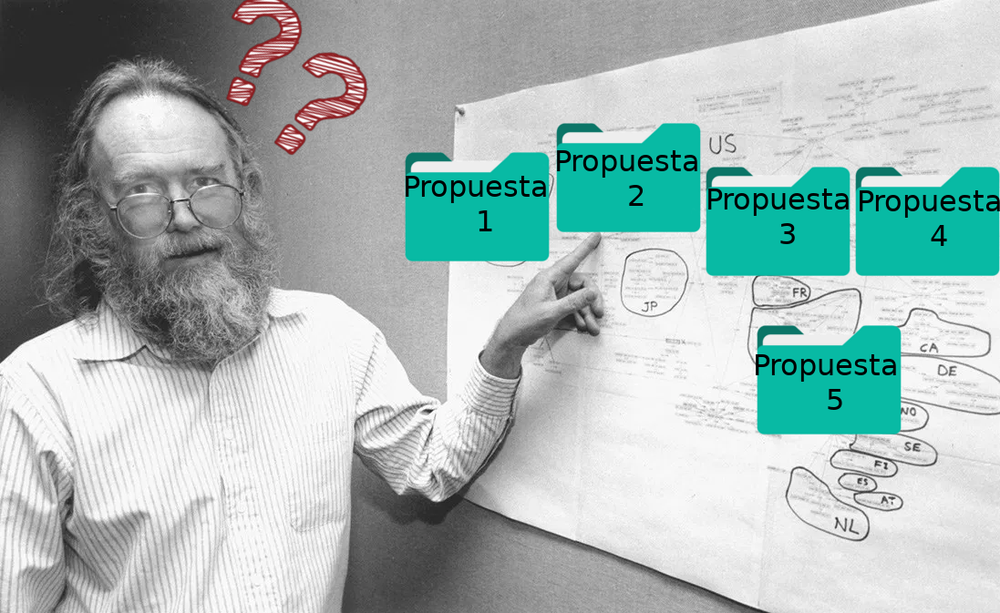

<h1 style="color: green">historia antes del nacimiento del <strong style="color: red">DNS</strong></h1>
<p>Comenzamos viendo que es lo más basico que hace el DNS y como se hacia antes de su existencia</p> <p>Nota: habran diapositivas que de debe ir para abajo en vez de ir a la derecha</p>
<h1>En los años 70</h1> <p>se disponia solo de 256 direcciones</p> <p>se accedia a paginas web con la dirección ip, para acordarse se uasaba una libreta (la agenda telefonica)</p> <p>Internet se llamaba Arpanet</p> <p>Imagen</p>
<h1>En los años 80</h1> <p>se creo el protocolo TCP/IP ofreciendo mas direcciones</p> <p>se diseño el fichero HOSTS.TXT alojado en la universidad de Standord, con la idea de que todo los equipo consultaran automaticamente la diercion de la pagina web</p> <p>Imagen</p>
<h2>Crecimiento de la red</h2> <p style="font-size:40px">Con esto el fichero HOSTS se volvio lento.</p> <p style="font-size:40px">Entoces el ingeniero(Jon Postel) a cargo del fichero estaba en duda sobre 5 propuestas de cambiar el fichero</p> 
<h1>¿que hizo Jon Postel?</h1> <p>Le pregunto a su amigo Paul Mockapetris que cual era la mejor propuesta de las 5 que tenia seleccionada.</p> <p>Las miro y las tiro a la basura, le propuso hacer algo mejor que esa 5 cosas.</p> <!-- [](https://academy.bit2me.com/wp-content/uploads/2019/05/49_DNS.png) -->
<h2>noviembre del 1983</h2> <p>Paul Mockapetris y Jon Postel crearon el sistema DNS, con este sistema ya no hacia falta recordar la dirección ip sino el nombre</p>
<h1>¿como funciona este sistema?</h1> <p>Fue diseñado pensando en las personas ya que nos es mas facil recordar un nombre que una dirección ip.</p> <p>Ya que la maquina no entiende el nombre el DNS le hace una traducción de nombre a ip.</p>
<h1>¿como hace la traducción?</h1> <p>Nosotros introducimos en la barra de direcciones el nombre ejemplo.es el sistema DNS lo leera .es.ejemplo</p>
<p>¿Porque hace esto?</p> <p>es simple para consegir la informacion esta dividida y de esta forma sabe por donde empezar a preguntar por la ip de la pagina "ejemplo.es"/p>